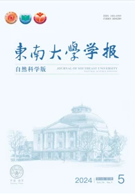
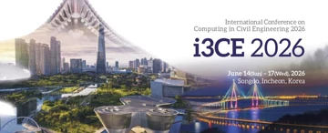
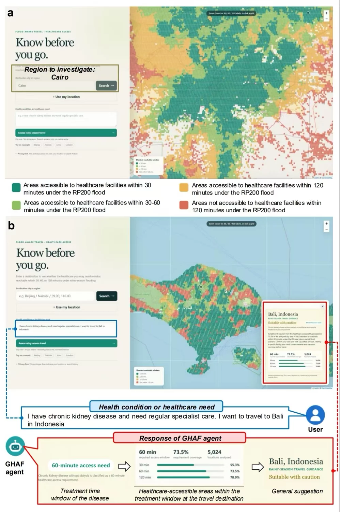
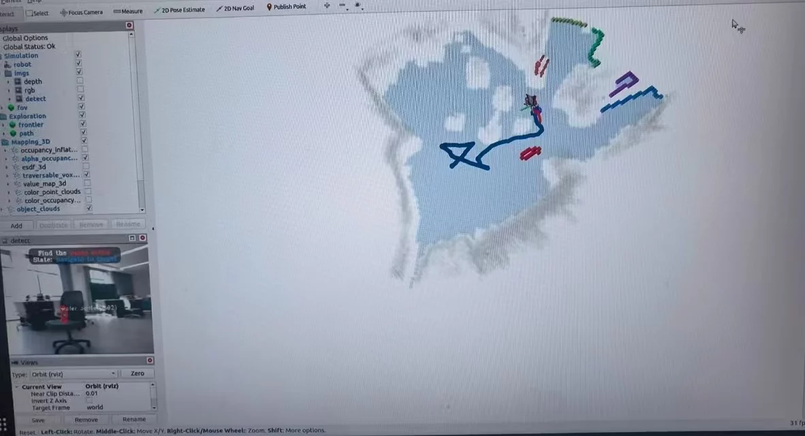
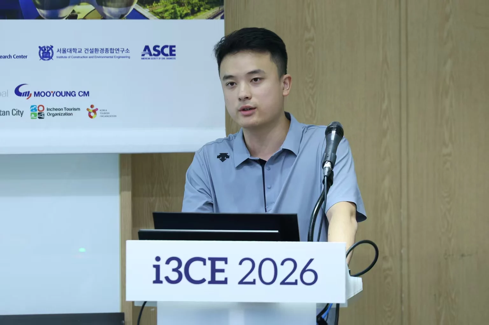
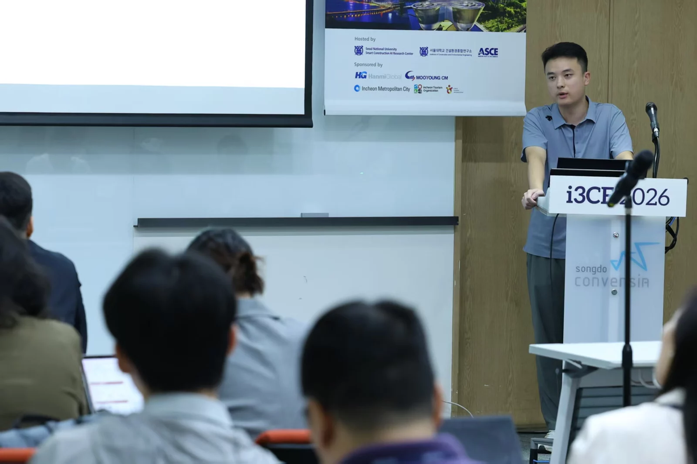

M.E. in Construction Management
Sep 2025 – PresentSoutheast University (SEU)
Supervisor: Dr. Shenghua Zhou
Joint-training M.E.
Sep 2026 – PresentEmbodied Reasoning and Robotics (ER2) Lab ↗
Co-supervisor: Prof. Zhengyi Chen
I am actively looking for a Ph.D. opportunity starting in 2028.
Southeast University (SEU)
Supervisor: Dr. Shenghua Zhou
Embodied Reasoning and Robotics (ER2) Lab ↗
Co-supervisor: Prof. Zhengyi Chen
BIOR Lab, National University of Singapore (NUS)
Supervisor: Dr. Maomao Hu
Southeast University (SEU)
Supervisor: Dr. Shenghua Zhou
I pursue research guided by my ISO (Industry-oriented, Solid, and Open) principle.
Post-disaster recovery of lifelines is critical, with numerous studies proposing tools for interdependent lifeline network recovery (LNR). However, existing tools themselves, whether standalone or embedded in systems, lack task-solving capabilities and still depend on human orchestration and execution for handling LNR tasks. Hence, this study proposes a development approach of large language model (LLM)-empowered agents that can intelligently utilize tools to solve LNR tasks. The approach comprises (i) the development of graph-guided LNR tools hosted on model context protocol (MCP) servers, (ii) the construction of LNR agents with the pattern of tool chain generation-tool execution (TCG-TE), and (iii) the evaluation and comparison of agents’ performance. The findings indicate that among the 32 compared agents, 5 out of 8 TCG-TE agents can successfully solve 50 LNR tasks, while none of the 24 traditional agents can solve all tasks. Agents following TCG-TE pattern with graph-guided MCP tools empowered by 8 LLMs solve 13.9% more tasks and reduce 68.2% of unnecessary tool invocations compared to the best-performing agents in traditional patterns. This study contributes by providing a development approach of LNR agents with task-solving capacities. Moreover, the proposed TCG-TE pattern alleviates agents’ difficulty in selecting and orchestrating tools.
Various tools (e.g., algorithms, models, and approaches) for interdependent infrastructure networks (IIN) recovery have been developed for human users, such as assessing facility importance, determining recovery sequences, allocating resources, and more. However, these tools lack task-resolving capabilities, depending on human selection and execution to accomplish specific tasks. Hence, this study proposes a TTT (Toolkit, TS-ReAct agents, Task set) framework to develop agents that intelligently use IIN recovery tools like humans. The framework involves (i) a Toolkit containing IIN recovery tools with a corresponding tool knowledge graph, (ii) TS-ReAct (Tool Selection-Reasoning and Acting) agents driven by 8 large language models (LLMs) to manipulate IIN recovery tools, and (iii) a Task set for evaluating and comparing agents’ performance. The findings demonstrate that the best-performing LLM-driven agents achieve a task success rate of up to 1.0. The agents following TS-ReAct pattern outperform those with traditional ReAct pattern by increasing task success rates by 82.2% and reducing excess steps by 88.7%. Besides proposing the TTT framework, this paper also contributes to addressing the conventional agents’ choice paralysis within a tool pool, as well as providing a reusable toolkit and a task set that enrich research on IIN recovery agents. Practically, this work broadens the user scope of IIN recovery tools beyond humans to include agents, potentially enabling IIN managers to interact with agents for indirect tool utilization.
Data centers play a crucial role in the modern digital industry, but their significant energy consumption, representing about 1.3% of global annual electricity use in 2023, poses a persistent challenge to sustainable development. While extensive research has focused on improving data center energy efficiency through technological innovations, the roles of governmental, social, economic, and legal contributions remain underexplored. Understanding public sentiment can help stakeholders develop holistic strategies that go beyond technology. Traditional survey-based public sentiment analyses are often time-consuming and labor-intensive with limited representativeness and dynamic scope due to small sample size, short durations, and spatial constraints. Research using social media data (SMD) addresses these limitations but faces challenges such as the need for extensive annotated datasets for training and a lack of accuracy or granularity in topic classification. In this study, we aim to develop a holistic approach to analyzing public sentiment and topics related to data center energy consumption using SMD and large language models (LLMs). We collected and preprocessed 104,624 pieces of SMD from Twitter, focusing on data center energy consumption in the USA. Sentiment labels were assigned using three LLMs, with majority voting employed to reduce individual LLM bias and identify the model with the highest F-score (0.953), Gemma 2, for subsequent topic classification. We observed an 87.4% increase in public attention to data center energy consumption in Q4 2022 and identified a predominant shift in sentiment from positive to negative, correlated with average electricity prices in US cities. We proposed a region-specific, three-tier public topic framework to analyze public topic distribution and temporal trends, resulting in four targeted policy recommendations focused on society, economy, and environment (SEE), renewable energy utilization, data center site selection, and economic factors. This study extends insights beyond technical aspects to promote sustainable energy efficiency in data center development and introduces a transferable approach applicable to public sentiment and topic analysis in other regions.
The diverse and ambivalent public attitudes toward Mobile Cabin Hospitals (MCHs) markedly influence MCHs’ social sustainability. Conventional studies regarding MCHs’ public attitudes rely heavily on survey-based approaches (e.g., questionnaires) that suffer from limited respondents, short durations, and narrow geographical coverages, overlooking tempo-spatial variations of MCHs’ public attitudes. Hence, this study proposes a social media data (SMD)-based approach to reveal public attitudes toward MCHs. It consists of MCH-related SMD collection, SMD preprocessing and annotation, sentiment and topic analysis model development, model performance verification, and statistical analyses of public sentiments and topics. This newly devised approach has been demonstrated for mining 413,572 pieces of MCH-related SMD covering MCH policy lifecycle in China. The findings reveal that (i) positive sentiment can surpass or fall below negative sentiments toward MCHs, which is correlated with the number of Covid-19 cases (NoCC), and (ii) the rankings of public concerns on 8 positive topics shift between two patterns temporally and spatially with NoCC, while the rankings among 6 negative topics remain stable for China's MCHs. This study not only offers an SMD-based supplementary approach for exploring public attitudes toward MCHs but also updates current understandings to enhance their social sustainability.
Purpose
Achieving smart question-answering (QA) for construction laws (CLs) holds significant promise in aiding domain professionals with legal inquiries. Existing studies of construction law question-answering (CLQA) rely on learning-based models, which require extensive training data and are limited to a narrow QA scope. Meanwhile, general-purpose large language models (GPLLMs) possess great potential for CLQA but fall short of domain-specific knowledge. This study aims to propose a data-driven and expertise-based approach to develop a construction law knowledge repository (CLKR) and validate its effectiveness in enhancing the CLQA performance of GPLLMs.
Design/methodology/approach
This methodology includes (1) recognizing 702 candidate CL documents from 374,992 official judgments, (2) building a CLKR with 387 filtered documents covering eight CL knowledge areas, (3) integrating CLKR and seven representative GPLLMs and (4) constructing a 2,140-question CLQA dataset from Professional Construction Engineer Qualification Examinations (PCEQEs) during 2014–2023 to compare CLQA performance between seven pairs of GPLLMs with and without CLKR.
Findings
The CLKR significantly enhances the CLQA performance of seven GPLLMs, yielding an impressive average accuracy increase of 21.1%, with individual improvements ranging from 9.9 to 44.9%. Furthermore, CLKR boosts the accuracy of single-answer questions by 14.9% and multiple-answer questions by 38.3%. Additionally, the accuracy enhancements across 8 CL knowledge areas are between 14.5 and 28.2%.
Originality/value
This study proposes an approach of developing the external knowledge base of CLKR to empower GPLLMs, significantly expanding the scope of CLQA while bypassing the complex training of traditional learning-based models. Moreover, this study confirms the effectiveness of CLKR in augmenting GPLLM performance and offers a reusable CLQA test dataset as a benchmark.

To promote the intelligentization of post-disaster recovery decision-making(RDM)for critical infrastructure networks(CIN), a CIN-RDM agent driven by large language models(LLMs)was proposed. First, a CIN-RDM toolbox and the corresponding tool knowledge graph were constructed. A tool filtering-reasoning and acting(TF-ReAct)agent architecture was put forward. Then, the CIN-RDM agents based on 6 LLMs were developed, whose performance were evaluated and compared. The results show that compared with the traditional ReAct architecture, the TF-ReAct architecture improves the task completion rate of the agents by 41. 1% and reduces the redundant action rate by 86. 2% on average. The TF-ReAct agents driven by GPT-4 and GPT-4o achieve a task completion rate of 1. 0 while eliminating redundant actions. This study contributes to enhancing the tool-use capabilities of agents, as well as facilitating the efficient application of CIN-RDM tools by infrastructure managers.

2026 ASCE International Conference on Computing in Civil Engineering (I3CE 2026)(accepted), Incheon, South Korea.
Given the limited resources for utility infrastructure post-disaster recovery, prioritizing repair teams and resources to relatively more critical facilities represents an efficient strategy. Scholars have developed various tools (e.g., a model for calculating the degree centrality of infrastructure facilities) for critical facility identification (CFI) within the interdependent utility infrastructure networks (UIN). However, these tools rely on UIN managers to manually deploy, select, and invoke, hindering their practical adoption in real-world decision-making. In response, this study develops agents based on large language models (LLMs) for identifying critical facilities. Specifically, we (i) deploy 11 agent-usable CFI tools through model context protocol (MCP), (ii) construct a 9-task CFI task set for agent performance evaluation, (iii) implement 5 CFI agents following the devised tool orchestration and execution (TOE) MCP architecture, and (iv) compare agent performance based on different architectures and LLMs (e.g., GPT-5 and DeepSeek-V3). The results demonstrate that 5 agents following the TOE MCP architecture successfully complete all CFI tasks, representing a 36.4% improvement over those following the MCP architecture.This study contributes by proposing an approach for developing agents capable of identifying critical facilities of UIN, thereby enabling UIN managers to indirectly utilize advanced CFI tools in practice.
2024 ASCE International Conference on Computing in Civil Engineering (I3CE 2024), Pittsburgh, USA.
The smart question-answering of construction laws and regulations (QAoCLR) could significantly reduce the CLR query cost. Most existing QAoCLR studies rely heavily on conventional small-scale deep learning models (e.g., BERT), resulting in inadequate language understanding and subpar QA performance. Despite large language models (LLMs) showing impressive QA potential in general fields, they remain ill-performed in professional areas (e.g., CLR) due to the lack of domain-specific knowledge incorporation. Hence, our study integrates a domain knowledge repository with LLMs for QAoCLR. It involves (1) creating a repository of 275 filtered laws and regulations, (2) developing a QAoCLR-oriented test data set of 1960 multiple-choice questions from the Chinese Registered Constructor Examinations, (3) retrieving relevant knowledge vectors and incorporating them into LLMs (i.e., GPT-3.5, GPT-4.0, text-davinci-003, and ChatGLM2-6B), and (4) comparing the performance of LLMs with and without domain knowledge incorporation. The results show that LLMs with domain knowledge exceed original LLMs in QAoCLR accuracy by an average of 27.95%. Specifically, there is a 21.25% improvement in single-answer questions and a 44.62% enhancement in multi-answer questions. This work reveals the effectiveness and necessity of domain knowledge incorporation into LLMs for QAoCLR.

Target journals
Nature Sustainability / Nature Climate Change / Nature Cities / Nature Communications

Target conferences/journals
IROS / IEEE Transactions on Robotics
Hongyu Wang made an oral presentation in 2026 ASCE International Conference on Computing in Civil Engineering (I3CE 2026)

